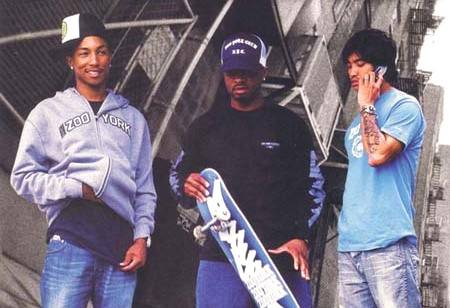

It’s a swelteringly hot day in West London and Clash is stumbling down to Trevor Horn’s famous Sarm Studios, where bold and beautiful musicians have been recording similarly bold and beautiful albums for decades. Making a flying visit at the moment are N*E*R*D, hitting the studio between gigs in London and Manchester to continue work on their forthcoming release..
After a gig the previous night - and some fairly standard gale force partying afterwards - the band have valiantly spent the day on a full press roster. A rare visit to the UK sees them much in demand, but like true professionals they do what is asked of them with little in the way of complaint. Everyone except Chad Hugo that is. Rumour has it that he is somewhere in the capital nursing a hangover.
With the band delayed by over an hour for our interview, I take the opportunity to listen again to the rough cuts of six tracks from the album, ‘Nothing’. They’re six truly precious recordings: having recorded over twenty tracks to form the basis of an entire album for release, the band decided to ditch everything and start again. A brave move to some, a foolish one to others. However, there was a general feeling amongst the three band members that with a little bit more work and alchemy they would have something truly great on their hands, rather than just good.
These six amuse-oreille give warning of a band rejuvenated and ready to force the listener into a reassessment. Having made serious waves with their hybridised behemoth, ‘In Search Of N*E*R*D’ in 2002, subsequent albums ‘Fly Or Die’ (2004), and ‘Seeing Sounds’ (2008), saw the band establish themselves as a respected outfit but perhaps without the over-arching reach of peers like Kanye West. On top of this, ambition sometimes fell short of ability in their desire to combine so many musical stylings into something totally new and original. Still, God loves a trier, and these last two albums gave us some killer singles without necessarily becoming classics in their own right, as their debut had.
Forthcoming album ‘Nothing’ - pencilled for release in September of this year - looks set to bring things into focus for N*E*R*D. In some ways it is a departure from what has come before, betraying a simpler, less hyper-active approach, and benefiting immensely from this greater focus and ruthless stylistic honesty.
As I finish listening to the psychedelic funk of ‘Party People’, the glitch-hop of ‘Nothing On You’ and the hypnotic space-club beats of ‘Hot ‘N’ Fun’, Shay Haley and Pharrell Williams arrive. Despite the retinue of assistants, camera man, musicians and assorted entourage, the two gentlemen at the eye of this storm are surprisingly down-to-earth. The differences between the two, as well as the absent Hugo, illustrate something about what makes N*E*R*D tick. Williams is every inch the international hip-hop star, from the Chanel jacket and glasses to the impressive jewelry. Haley is plain jeans, T-shirt and a Billionaire Boys Club baseball hat. As we sit down, the smells eminating from the kitchen prompt Haley to inquire about the possibility of getting hold of some ‘chicken pie pie’ or shepherd’s pie. Williams passes on the offer of food as he has plans to head to chic sushi joint Nobu later that evening.
The differences are always what makes a band special, the oxymoronic glue that holds them together, and Haley is appreciatively aware of this as we start to talk about this band that has such magical, cross-genre appeal. “That’s the cool thing about N*E*R*D,” he says, leaning back in his chair. “Chad, Pharrell and myself - although we have a lot of similarities - we all like different things. Like Chad was big on the rave scene at one point. I mean if you check out his record collection, he’s got all types of music, like Harry Belafonte, shit that I would never listen to, but respect. Pharrell is big on the whole ’70s jazz scene, soul scene, and I’m more into the indie bands of today, and you fuse all that together and you get a nice blend of a lot of different sounds. It’s cool.”

This disparity of tastes no doubt explains why the UK, with its magpie musicality, took so readily to Williams, Haley and Hugo. It’s an affection reciprocated by the band. Williams leans forward, resting his arms on his knees. Even with his sunglasses on he effortlessly fixes and holds your gaze. “You guys love eclectic music. If it’s good it makes it, if it’s shit, it don’t. But even the songs that don't make it on the radio and the sounds that don’t make it on the radio, they make it in the club. There’s a scene and you go there and everyone’s immersed. There’s loads of things about England, and about being in this band that we love and so much musical diversity.” Haley nods in agreement. “I love coming over here. Each time since day one UK people have been good to us and make us feel right at home,” Haley says. He smiles. “There’s never a dull moment.”
There may never be a dull moment, but N*E*R*D seem to have realised that they can give a better return on the high esteem that their fans hold them in with ‘Nothing’. “We have the songs this time,” Williams points out. “The last two albums the songs take two or three listens. These are instant.” It seems as close as you’ll ever get to an admission of shortcomings in the past from a musician of Williams’ stature. He’s always been quietly brilliant as one half of the production duo The Neptunes alongside bandmate Hugo, but this considered side of his character being expressed to a greater extent in N*E*R*D can only be a good thing.
As he gets older, Pharrell the Pop Star and his hubris seems to be taking second place increasingly to Williams the musical purist and perfectionist. No doubt this was one reason for the twenty tracks that would have formed the basis of ‘Nothing’ being ditched. I enquire as to what happened in that regard. “I don’t know if anything was not pleasing, I think it’s just we felt like a change. The world is crazy. There’s a lot going on for us to talk about. It’s a sign of the times. We’re on our little hippy kick. Thank God we caught it.”
His ‘hippy kick’, as he calls it, seems to be the basis of how he sees the world, and in turn where he has found inspiration. Once again looking at me intently through the sunglasses, he warms to his theme. “There are so many moving pieces to existence and in your life that you would think that you just get up and go to work, come home and go to sleep but that’s not life. Life is dictated by who’s in office. Life is dictated by the technology you’re being introduced to and how you use it in your everyday life. Life is dictated by the environment, and it seems that all these things have run amok so people are talking about it. There’s a surge in America and we’re seeing it over here too. People are just kinda going, ‘What are you saying? What’s going on?’ It’s almost like there’s two suns. Or two moons.”
So, is this a manifesto album with more similarities to social commentary albums of the Sixties and early Seventies? Williams thinks not. “I don’t know if we’re making any statements,” says the man in the Chanel jacket and battered jeans. “We think the way to promote change is working on yourself, one person at a time and I think if we can inspire you and encourage you to be ambitious, then you have become aligned and you are one of, I don't know, six billion people on the planet. That’s all we’re trying to move: one person at a time.”
You’ve got to admire the simplicity of their vision and, as it is now going to be reflected with extreme clarity in their next album, part of you suspects that the revolution may just start here. Haley relishes the joy of getting out there and connecting with a live audience, but it’s perhaps Williams who aims for the bigger impact. Flashing that charming smile in my direction once more, Williams gives me perhaps the closest thing N*E*R*D will ever have to a manifesto: “We just want to do something different; we want to change the world.”